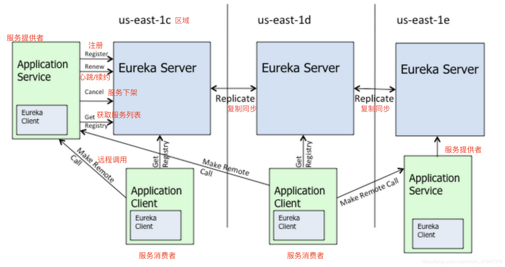
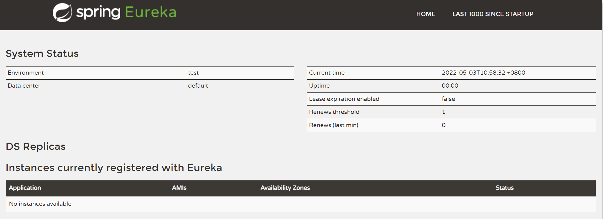
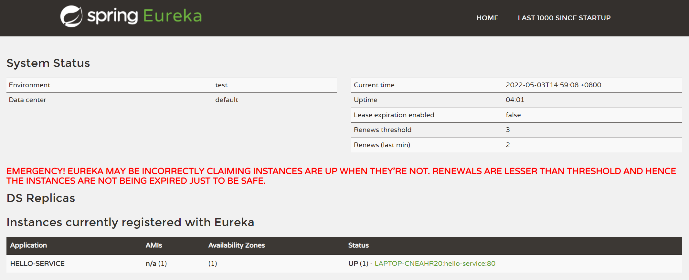
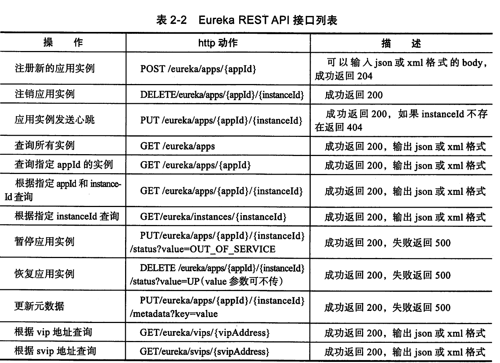
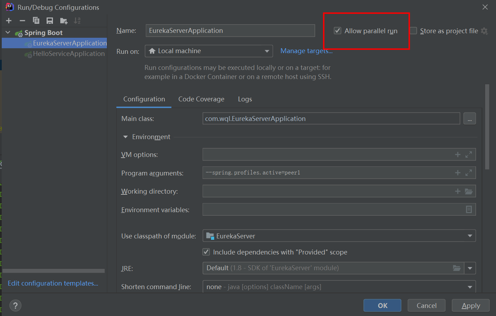
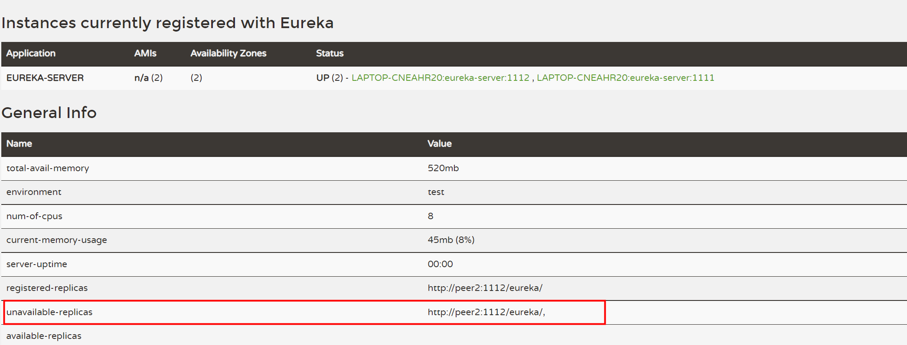
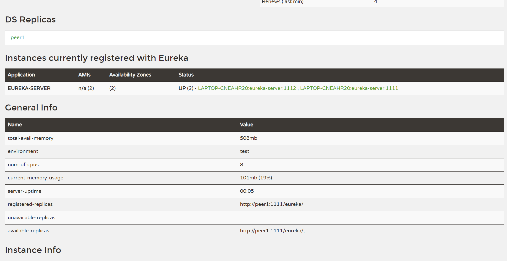
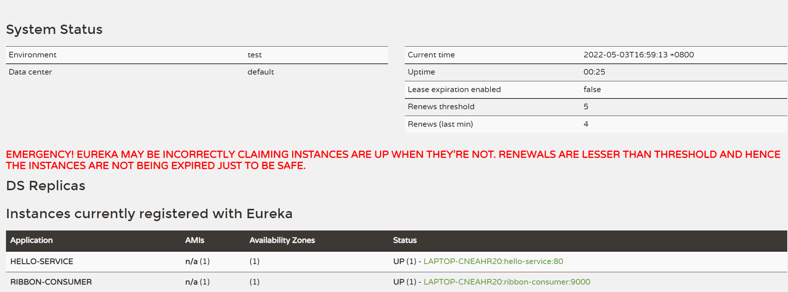

Eureka注册中心
Eureka体系结构

搭建服务注册中心
application.yml
server:
# 应用端口号
port: 8888
eureka:
instance:
# 应用所在的主机名
hostname: localhost
# 关闭自我保护机制，默认为true代表启动
enable-self-preservation: false
# 指定自我保护机制的开启阈值，默认0.85
# renewal-percent-threshold: 0.7
client:
# 本身为注册中心, 不向注册中心注册自己
registerWithEureka: false
# 注册中心的职责是维护服务实例，它并不需要去检索服务，所以设置为false
fetchRegistry: false
serviceUrl:
defaultZone: http://${eureka.instance.hostname}:${server.port}/eureka/
spring:
application:
# 应用名称
name: eureka-server主类EurekaServerApplication：
package com.wql;
import org.springframework.boot.SpringApplication;
import org.springframework.boot.autoconfigure.SpringBootApplication;
import org.springframework.cloud.netflix.eureka.server.EnableEurekaServer;
/**
* @author Zhouzc
* @description TODO
* @className com.wql.EurekaServerApplication
* @date 2019/10/21
* @Version
**/
// 通过@EnableEurekaServer注解启动一个服务注册中心提供给其他应用
@EnableEurekaServer
@SpringBootApplication
public class EurekaServerApplication {
public static void main(String[] args) {
SpringApplication.run(EurekaServerApplication.class, args);
}
}
注册服务提供者
eureka:
client:
serviceUrl:
# 指定服务注册中心地址
defaultZone: http://localhost:8888/eureka/
instance:
prefer-ip-address: true
# 自定义 Eureka 的 InstanceID 主机名：服务名称：服务端口
instance-id: ${spring.application.name}:${spring.cloud.client.ipAddress}:${server.port}
status-page-url:www.wql.com
server:
port: 80
spring:
application:
# 应用名称
name: hello-service主类HelloServiceApplication
package com.wql;
import org.springframework.boot.SpringApplication;
import org.springframework.boot.autoconfigure.SpringBootApplication;
import org.springframework.cloud.client.discovery.EnableDiscoveryClient;
/**
* @author Zhouzc
* @description 配置中心服务
* @className ConfigServerApplication
* @date 2019/10/22
* @Version
**/
// @EnableDiscoveryClient和@EnableEurekaClient共同点就是：都是能够让注册中心能够发现，扫描到改服务。@EnableEurekaClient只适用于Eureka作为注册中心，@EnableDiscoveryClient 可以是其他注册中心,通用性更强。
@EnableDiscoveryClient
@SpringBootApplication
public class HelloServiceApplication {
public static void main(String[] args) {
SpringApplication.run(HelloServiceApplication.class, args);
}
}启动注册中心与hello-service服务后
hello-service日志信息：
2022-05-03 01:07:21.088 INFO 2368 --- [ main] com.netflix.discovery.DiscoveryClient : The response status is 200
2022-05-03 01:07:21.088 INFO 2368 --- [ main] com.netflix.discovery.DiscoveryClient : Starting heartbeat executor: renew interval is: 30
2022-05-03 01:07:21.090 INFO 2368 --- [ main] c.n.discovery.InstanceInfoReplicator : InstanceInfoReplicator onDemand update allowed rate per min is 4
2022-05-03 01:07:21.093 INFO 2368 --- [ main] com.netflix.discovery.DiscoveryClient : Discovery Client initialized at timestamp 1651511241093 with initial instances count: 0
2022-05-03 01:07:21.112 INFO 2368 --- [ main] o.s.c.n.e.s.EurekaServiceRegistry : Registering application hello-service with eureka with status UP
2022-05-03 01:07:21.113 INFO 2368 --- [ main] com.netflix.discovery.DiscoveryClient : Saw local status change event StatusChangeEvent [timestamp=1651511241113, current=UP, previous=STARTING]
2022-05-03 01:07:21.114 INFO 2368 --- [nfoReplicator-0] com.netflix.discovery.DiscoveryClient : DiscoveryClient_HELLO-SERVICE/LAPTOP-CNEAHR20:hello-service:80: registering service...
2022-05-03 01:07:21.251 INFO 2368 --- [ main] s.b.c.e.t.TomcatEmbeddedServletContainer : Tomcat started on port(s): 80 (http)
2022-05-03 01:07:21.252 INFO 2368 --- [ main] .s.c.n.e.s.EurekaAutoServiceRegistration : Updating port to 80
2022-05-03 01:07:21.254 INFO 2368 --- [nfoReplicator-0] com.netflix.discovery.DiscoveryClient : DiscoveryClient_HELLO-SERVICE/LAPTOP-CNEAHR20:hello-service:80 - registration status: 204
2022-05-03 01:07:21.256 INFO 2368 --- [ main] com.wql.HelloServiceApplication : Started HelloServiceApplication in 10.054 seconds (JVM running for 12.462)注册中心控制台：
2022-05-03 01:33:32.697 INFO 28780 --- [io-8888-exec-10] c.n.e.registry.AbstractInstanceRegistry : Registered instance HELLO-SERVICE/LAPTOP-CNEAHR20:hello-service:80 with status DOWN (replication=false)
2022-05-03 01:34:03.478 INFO 28780 --- [nio-8888-exec-9] c.n.e.registry.AbstractInstanceRegistry : Registered instance HELLO-SERVICE/LAPTOP-CNEAHR20:hello-service:80 with status UP (replication=false)
2022-05-03 01:34:19.425 INFO 28780 --- [a-EvictionTimer] c.n.e.registry.AbstractInstanceRegistry : Running the evict task with compensationTime 13ms
2022-05-03 01:35:19.425 INFO 28780 --- [a-EvictionTimer] c.n.e.registry.AbstractInstanceRegistry : Running the evict task with compensationTime 0ms
2022-05-03 01:36:18.232 INFO 28780 --- [hresholdUpdater] c.n.e.r.PeerAwareInstanceRegistryImpl : Current renewal threshold is : 3

高可用注册中心
Eureka Server的高可用实际上就是将自己作为服务向其他服务注册中心注册自己，这样就可以形成一组互相注册的服务注册中心，以实现服务清单的互相同步，达到高可用的效果。
application-peer1.yml
server:
port: 1111
eureka:
instance:
hostname: localhost
client:
registerWithEureka: true
fetchRegistry: true
serviceUrl:
defaultZone: http://peer2:1112/eureka/
spring:
application:
name: eureka-serverapplication-peer2.yml
server:
port: 1112
eureka:
instance:
hostname: localhost
client:
registerWithEureka: true
fetchRegistry: true
serviceUrl:
defaultZone: http://peer1:1111/eureka/
spring:
application:
name: eureka-server设置IDEA并行运行

设置启动参数：
--spring.profiles.active=peer1
--spring.profiles.active=peer2
Eureka高可用部署，启动多个注册中心后，节点均出现在unavailable-replicas。具体的解决方案如下：Eureka集群搭建，unavailable-replicas服务节点不可用
同一主机上配置多个节点，则各节点的eureka.instance.hostname（实例的主机名）不能一样。为各节点配置不同的hostname，然后修改主机的hosts文件，增加映射。
127.0.0.1 peer1
127.0.0.1 peer2
在设置了多节点的服务注册中心之后，服务提供方还需要做一些简单的配置才能将服务注册到 Eureka Server集群中。我们以hello-service为例，修改
application.properties 配置文件，如下所示:
eureka.client.serviceUrl.defaultZone=http://peer1:11l1/eureka/, http://peer2:1112/eureka/如我们不想使用主机名来定义注册中心的地址，也可以使用IP地址的形式，但是需要在配置文件中增加配置参数
eureka.instance.prefer-ip-address=true，该值默认为false。
服务发现与消费
主类ConsumerApplication
package com.didispace;
import org.springframework.boot.SpringApplication;
import org.springframework.boot.autoconfigure.SpringBootApplication;
import org.springframework.cloud.client.circuitbreaker.EnableCircuitBreaker;
import org.springframework.cloud.client.discovery.EnableDiscoveryClient;
import org.springframework.cloud.client.loadbalancer.LoadBalanced;
import org.springframework.context.annotation.Bean;
import org.springframework.web.client.RestTemplate;
@EnableCircuitBreaker
@EnableDiscoveryClient
@SpringBootApplication
public class ConsumerApplication {
@Bean
@LoadBalanced
RestTemplate restTemplate() {
return new RestTemplate();
}
public static void main(String[] args) {
SpringApplication.run(ConsumerApplication.class, args);
}
}
自我保护机制
在 Eureka 服务页面中看到如下红色字体内容，表示当前 EurekaServer 启动了自我保护机制，进入了自我保护模式。
默认情况下，EurekaServer 在 90 秒内没有收到到服务列表中某微服务续约心跳，则会自动将该微服务从服务列表中删除。
Eureka服务端会检查最近15分钟内所有Eureka 实例正常心跳占比，如果低于85%就会触发自我保护机制。触发了保护机制，Eureka将暂时把这些失效的服务保护起来，不让其过期，但这些服务也并不是永远不会过期。Eureka在启动完成后，每隔60秒会检查一次服务健康状态，如果这些被保护起来失效的服务过一段时间后（默认90秒）还是没有恢复，就会把这些服务剔除。如果在此期间服务恢复了并且实例心跳占比高于85%时，就会自动关闭自我保护机制。
实践是：自我保护状态一旦开启，除非客户端恢复导致退出自我保护状态，否则实例永不删除。
https://blog.csdn.net/qq_35976271/article/details/102314965
eureka详情

服务提供者
服务注册
eureka.client.register-with-eureka=true服务同步
服务续约
# 服务续约任务的调用时间间隔，默认30s
eureka.instance.lease-renewal-interval-in-seconds=30
# 服务失效的时间，默认90s
eureka.instance.lease-expiration-duration-in-seconds=90服务消费者
获取服务
# Eureka Server 会维护一份只读的服务清单来返回给客户端，同时该缓存清单会每隔30秒更新一次。若希望修改缓存清单的更新时间，可以通过参数进行修改，该参数默认值为30s。
eureka.client.reaistry-fetch-interval-seconds=30服务调用
注册中心
失效剔除
对于非正常的服务下线，Eureka Server在启动的时候会创建一个定时任务，默认每隔一段时间（默认为60秒)将当前清单中超时（默认为90秒)没有续约的服务剔除出去。
自我保护
服务注册到Eureka Server之后，会维护一个心跳连接。Eureka Server在运行期间,会统计心跳失败的比例在15分钟之内是否低于85%,如果出现低于的情况(在单机调试的时候很容易满足，实际在生产环境上通常是由于网络不稳定导致)，EurekaServer会将当前的实例注册信息保护起来，让这些实例不会过期，尽可能保护这些注册信息。但是，在这段保护期间内实例若出现问题，那么客户端很容易拿到实际已经不存在的服务实例，会出现调用失败的情况，所以客户端必须要有容错机制,比如可以使用请求重试、断路器等机制。
在本地进行开发的时候，可以使用eureka.server.enable-self-preservation=false参数来关闭保护机制，以确保注册中心可以将不可用的实例正确剔除。
源码分析
@EnableDiscoveryClient注解用来开启DiscoveryClient实例
DiscoveryClient类用于帮助与 Eureka Server互相协作。
Eureka Client负责下面的任务:
向Eureka Server注册服务实例
向Eureka Server服务租约
当服务关闭期间，向Eureka Server取消租约
查询Eureka Server中的服务实例列表
Eureka Client 还需要配置一个Eureka Server的URL 列表。
SpringCloud 中的Eureka默认使用的Region为us-east-1。
Eureka的缓存机制/三级缓存
https://segmentfault.com/a/1190000011668299
https://blog.csdn.net/qq_34680763/article/details/123736997
https://blog.csdn.net/weixin_41947378/category_10361937.html